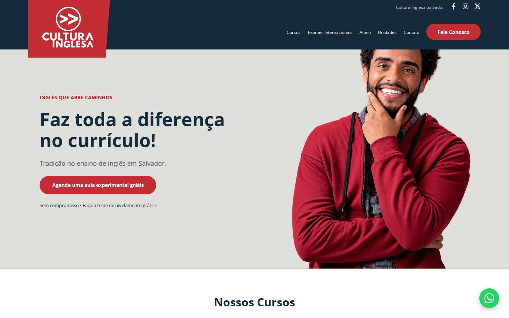

PROFESSIONAL PROJECT 2018–2019 / REBUILT 2026
Cultura Inglesa Salvador
A familiar educational brand, rebuilt for the browser.
I revisited my earlier UX/UI work and rebuilt the homepage from scratch, using the original visual design as a reference. The implementation includes responsive course navigation, validated demo forms and a Leaflet-powered locations map.
HTML5CSS3JavaScriptLeaflet
Independent reconstruction. Forms do not submit data; this is not the institution’s official website.